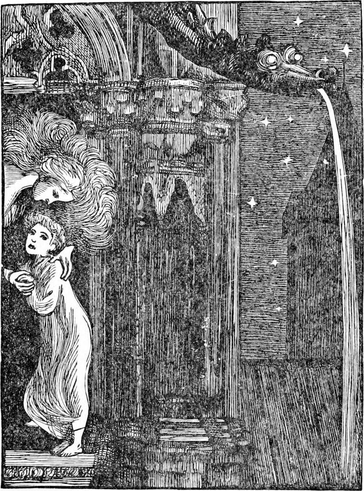
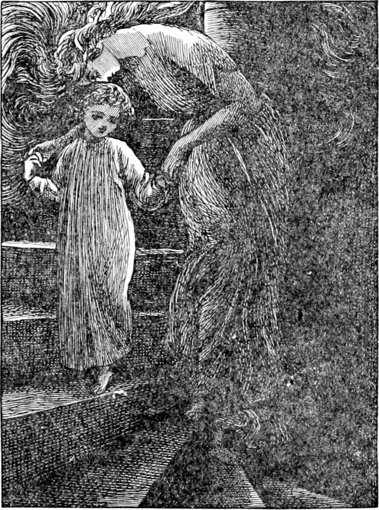
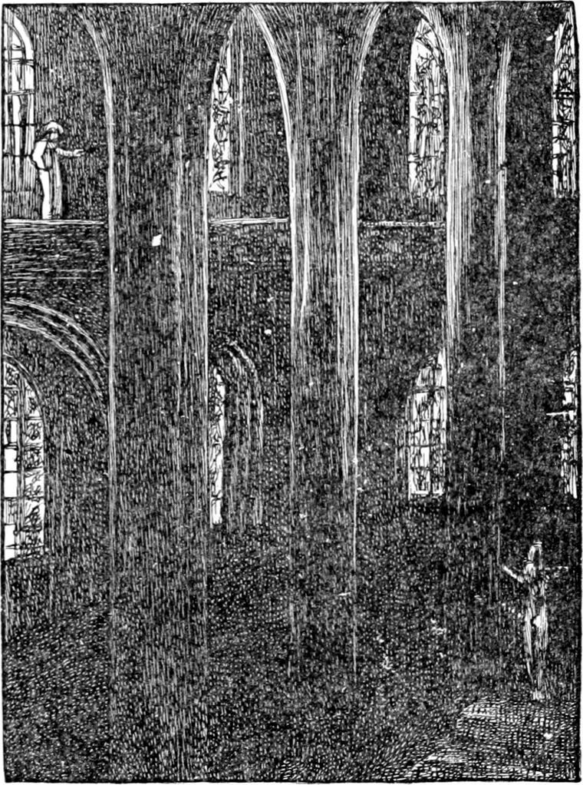
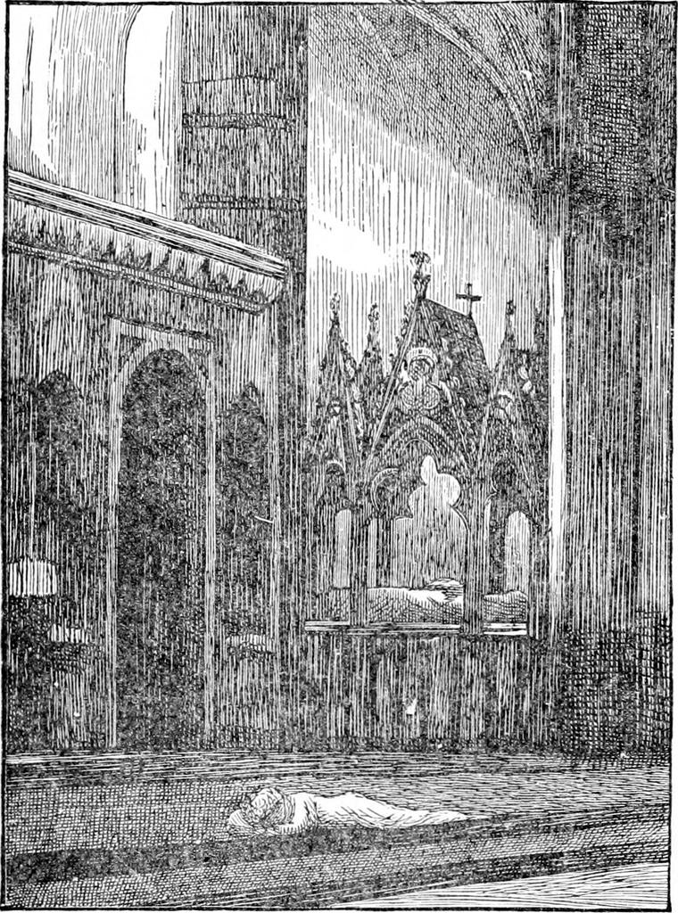

I MUST not go on describing what cannot be described, for nothing is more wearisome.
Before they reached the sea, Diamond felt North Wind's hair just beginning to fall about him.
“Is the storm over, North Wind?” he called out.
“No, Diamond. I am only waiting a moment to set you down. You would not like to see the ship sunk, and I am going to give you a place to stop in till I come back for you.”
“Oh! thank you,” said Diamond. “I shall be sorry to leave you, North Wind, but I would rather not see the ship go down. And I'm afraid the poor people will cry, and I should hear them. Oh, dear!”
“There are a good many passengers on board; and to tell the truth, Diamond, I don't care about your hearing the cry you speak of. I am afraid you would not get it out of your little head again for a long time.”
“But how can you bear it then, North Wind? For I am sure you are kind. I shall never doubt that again.”
“I will tell you how I am able to bear it, Diamond: I am always hearing, through every noise, through all the noise I am making myself even, the sound of a far-off song. I do not exactly know where it is, or what it means; and I don't hear much of it, only the odour of its music, as it were, flitting across the great billows of the ocean outside this air in which I make such a storm; but what I do hear is quite enough to make me able to bear the cry from the drowning ship. So it would you if you could hear it.”
“No, it wouldn't,” returned Diamond, stoutly. “For they wouldn't hear the music of the far-away song; and if they did, it wouldn't do them any good. You see you and I are not going to be drowned, and so we might enjoy it.”
“But you have never heard the psalm, and you don't know what it is like. Somehow, I can't say how, it tells me that all is right; that it is coming to swallow up all cries.”
“But that won't do them any good—the people, I mean,” persisted Diamond.
“It must. It must,” said North Wind, hurriedly. “It wouldn't be the song it seems to be if it did not swallow up all their fear and pain too, and set them singing it themselves with the rest. I am sure it will. And do you know, ever since I knew I had hair, that is, ever since it began to go out and away, that song has been coming nearer and nearer. Only I must say it was some thousand years before I heard it.”
“But how can you say it was coming nearer when you did not hear it?” asked doubting little Diamond.
“Since I began to hear it, I know it is growing louder, therefore I judge it was coming nearer and nearer until I did hear it first. I'm not so very old, you know—a few thousand years only—and I was quite a baby when I heard the noise first, but I knew it must come from the voices of people ever so much older and wiser than I was. I can't sing at all, except now and then, and I can never tell what my song is going to be; I only know what it is after I have sung it.—But this will never do. Will you stop here?”
“I can't see anywhere to stop,” said Diamond. “Your hair is all down like a darkness, and I can't see through it if I knock my eyes into it ever so much.”
“Look, then,” said North Wind; and, with one sweep of her great white arm, she swept yards deep of darkness like a great curtain from before the face of the boy.
And lo! it was a blue night, lit up with stars. Where it did not shine with stars it shimmered with the milk of the stars, except where, just opposite to Diamond's face, the grey towers of a cathedral blotted out each its own shape of sky and stars.
“Oh! what's that?” cried Diamond, struck with a kind of terror, for he had never seen a cathedral, and it rose before him with an awful reality in the midst of the wide spaces, conquering emptiness with grandeur.
“A very good place for you to wait in,” said North Wind. “But we shall go in, and you shall judge for yourself.”
There was an open door in the middle of one of the towers, leading out upon the roof, and through it they passed. Then North Wind set Diamond on his feet, and he found himself at the top of a stone stair, which went twisting away down into the darkness for only a little light came in at the door. It was enough, however, to allow Diamond to see that North Wind stood beside him. He looked up to find her face, and saw that she was no longer a beautiful giantess, but the tall gracious lady he liked best to see. She took his hand, and, giving him the broad part of the spiral stair to walk on, led him down a good way; then, opening another little door, led him out upon a narrow gallery that ran all round the central part of the church, on the ledges of the windows of the clerestory, and through openings in the parts of the wall that divided the windows from each other. It was very narrow, and except when they were passing through the wall, Diamond saw nothing to keep him from falling into the church. It lay below him like a great silent gulf hollowed in stone, and he held his breath for fear as he looked down.

“What are you trembling for, little Diamond?” said the lady, as she walked gently along, with her hand held out behind her leading him, for there was not breadth enough for them to walk side by side.

“I am afraid of falling down there,” answered Diamond. “It is so deep down.”
“Yes, rather,” answered North Wind; “but you were a hundred times higher a few minutes ago.”
“Ah, yes, but somebody's arm was about me then,” said Diamond, putting his little mouth to the beautiful cold hand that had a hold of his.
“What a dear little warm mouth you've got!” said North Wind. “It is a pity you should talk nonsense with it. Don't you know I have a hold of you?”
“Yes; but I'm walking on my own legs, and they might slip. I can't trust myself so well as your arms.”
“But I have a hold of you, I tell you, foolish child.”
“Yes, but somehow I can't feel comfortable.”
“If you were to fall, and my hold of you were to give way, I should be down after you in a less moment than a lady's watch can tick, and catch you long before you had reached the ground.”
“I don't like it though,” said Diamond.
“Oh! oh! oh!” he screamed the next moment, bent double with terror, for North Wind had let go her hold of his hand, and had vanished, leaving him standing as if rooted to the gallery.
She left the words, “Come after me,” sounding in his ears.
But move he dared not. In a moment more he would from very terror have fallen into the church, but suddenly there came a gentle breath of cool wind upon his face, and it kept blowing upon him in little puffs, and at every puff Diamond felt his faintness going away, and his fear with it. Courage was reviving in his little heart, and still the cool wafts of the soft wind breathed upon him, and the soft wind was so mighty and strong within its gentleness, that in a minute more Diamond was marching along the narrow ledge as fearless for the time as North Wind herself.
He walked on and on, with the windows all in a row on one side of him, and the great empty nave of the church echoing to every one of his brave strides on the other, until at last he came to a little open door, from which a broader stair led him down and down and down, till at last all at once he found himself in the arms of North Wind, who held him close to her, and kissed him on the forehead. Diamond nestled to her, and murmured into her bosom,—“Why did you leave me, dear North Wind?”
“Because I wanted you to walk alone,” she answered.
“But it is so much nicer here!” said Diamond.
“I daresay; but I couldn't hold a little coward to my heart. It would make me so cold!”

“But I wasn't brave of myself,” said Diamond, whom my older readers will have already discovered to be a true child in this, that he was given to metaphysics. “It was the wind that blew in my face that made me brave. Wasn't it now, North Wind?”
“Yes: I know that. You had to be taught what courage was. And you couldn't know what it was without feeling it: therefore it was given you. But don't you feel as if you would try to be brave yourself next time?”
“Yes, I do. But trying is not much.”
“Yes, it is—a very great deal, for it is a beginning. And a beginning is the greatest thing of all. To try to be brave is to be brave. The coward who tries to be brave is before the man who is brave because he is made so, and never had to try.”
“How kind you are, North Wind!”
“I am only just. All kindness is but justice. We owe it.”
“I don't quite understand that.”
“Never mind; you will some day. There is no hurry about understanding it now.”
“Who blew the wind on me that made me brave?”
“I did.”
“I didn't see you.”
“Therefore you can believe me.”
“Yes, yes; of course. But how was it that such a little breath could be so strong?”
“That I don't know.”
“But you made it strong?”
“No: I only blew it. I knew it would make you strong, just as it did the man in the boat, you remember. But how my breath has that power I cannot tell. It was put into it when I was made. That is all I know. But really I must be going about my work.”
“Ah! the poor ship! I wish you would stop here, and let the poor ship go.”
“That I dare not do. Will you stop here till I come back?”
“Yes. You won't be long?”
“Not longer than I can help. Trust me, you shall get home before the morning.”
In a moment North Wind was gone, and the next Diamond heard a moaning about the church, which grew and grew to a roaring. The storm was up again, and he knew that North Wind's hair was flying.
The church was dark. Only a little light came through the windows, which were almost all of that precious old stained glass which is so much lovelier than the new. But Diamond could not see how beautiful they were, for there was not enough of light in the stars to show the colours of them. He could only just distinguish them from the walls, He looked up, but could not see the gallery along which he had passed. He could only tell where it was far up by the faint glimmer of the windows of the clerestory, whose sills made part of it. The church grew very lonely about him, and he began to feel like a child whose mother has forsaken it. Only he knew that to be left alone is not always to be forsaken.
He began to feel his way about the place, and for a while went wandering up and down. His little footsteps waked little answering echoes in the great house. It wasn't too big to mind him. It was as if the church knew he was there, and meant to make itself his house. So it went on giving back an answer to every step, until at length Diamond thought he should like to say something out loud, and see what the church would answer. But he found he was afraid to speak. He could not utter a word for fear of the loneliness. Perhaps it was as well that he did not, for the sound of a spoken word would have made him feel the place yet more deserted and empty. But he thought he could sing. He was fond of singing, and at home he used to sing, to tunes of his own, all the nursery rhymes he knew. So he began to try `Hey diddle diddle', but it wouldn't do. Then he tried `Little Boy Blue', but it was no better. Neither would `Sing a Song of Sixpence' sing itself at all. Then he tried `Poor old Cockytoo', but he wouldn't do. They all sounded so silly! and he had never thought them silly before. So he was quiet, and listened to the echoes that came out of the dark corners in answer to his footsteps.

At last he gave a great sigh, and said, “I'm so tired.” But he did not hear the gentle echo that answered from far away over his head, for at the same moment he came against the lowest of a few steps that stretched across the church, and fell down and hurt his arm. He cried a little first, and then crawled up the steps on his hands and knees. At the top he came to a little bit of carpet, on which he lay down; and there he lay staring at the dull window that rose nearly a hundred feet above his head.
Now this was the eastern window of the church, and the moon was at that moment just on the edge of the horizon. The next, she was peeping over it. And lo! with the moon, St. John and St. Paul, and the rest of them, began to dawn in the window in their lovely garments. Diamond did not know that the wonder-working moon was behind, and he thought all the light was coming out of the window itself, and that the good old men were appearing to help him, growing out of the night and the darkness, because he had hurt his arm, and was very tired and lonely, and North Wind was so long in coming. So he lay and looked at them backwards over his head, wondering when they would come down or what they would do next. They were very dim, for the moonlight was not strong enough for the colours, and he had enough to do with his eyes trying to make out their shapes. So his eyes grew tired, and more and more tired, and his eyelids grew so heavy that they would keep tumbling down over his eyes. He kept lifting them and lifting them, but every time they were heavier than the last. It was no use: they were too much for him. Sometimes before he had got them half up, down they were again; and at length he gave it up quite, and the moment he gave it up, he was fast asleep.